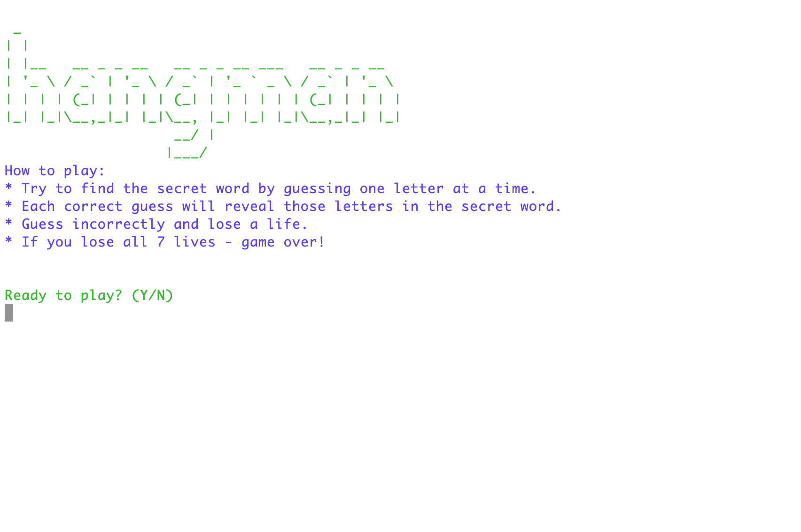
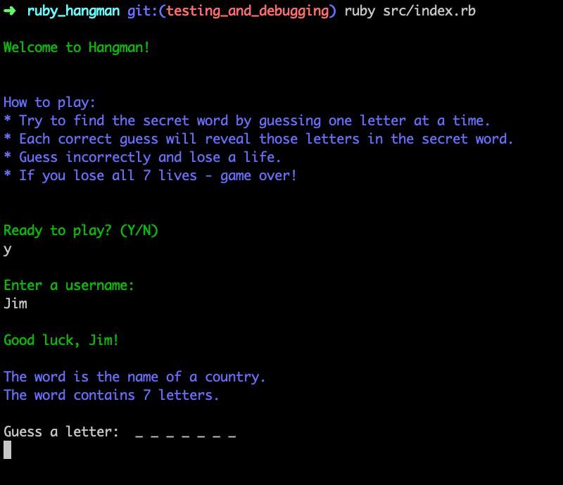
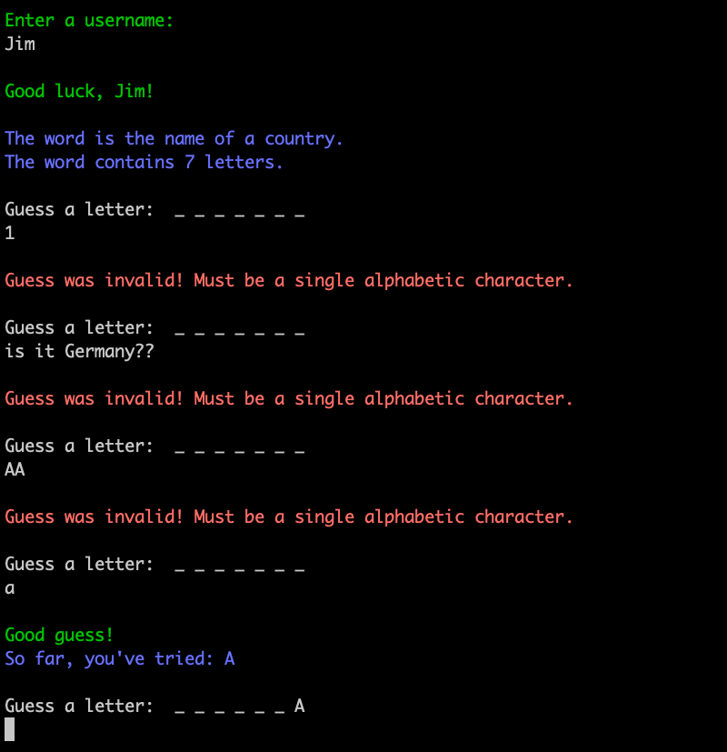
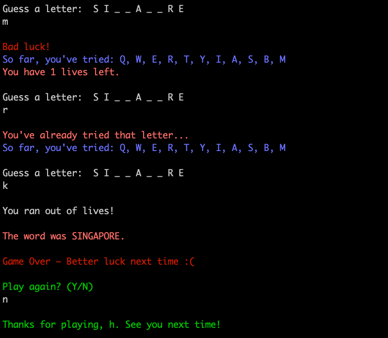

Hangman
A Terminal Word-Guessing App
Working as a team of two, we were tasked with creating a Ruby application that is run through the terminal.
Our idea was to recreate the game of Hangman, where the user has to guess the secret word one letter at a time. If they guess correctly, the letter will be displayed in the secret word. If they guess incorrectly, it will display the number of lives left along with the hangman diagram.
The original project didn't have ASCII art as this was one of our stretch goals for the limited time frame. However, Jim has added this after submission and this can be viewed in the Github source code.
Skills
- Ruby
- Command Line
- Pair Programming



